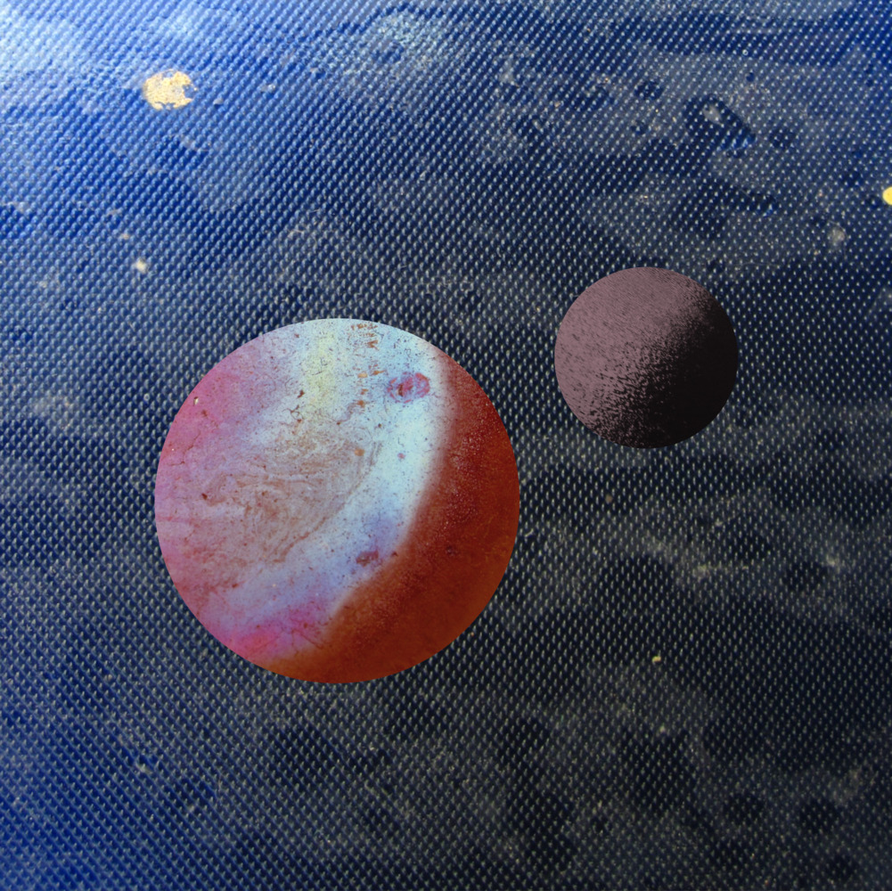

Music
I am a bass player and (occasional) composer. At the moment, I have two bands.
Ego Super
Ego Super is a psycho-rap-rock band. As the genre description suggest, the music (and lyrics) are inspired by (clinical) psychology. My band members are friends with whom I studied psychology and with whom I also played in other bands before. I am happy that we are still making music together although we unfortunately don’t live in the same city anymore. Our most recent (2021) release is called “Kaviar Katharsis”.
You can find out more about the band on their website.
Kaviar Katharis video
This video gives an idea about the band. The track is about excess and decadence. I am the actor in the green dress. The singer is my friend Daniel and the guy in the grey robe is my friend Pit and the drummer of the band.
“Kaviar Kathrsis” at Spotify
Concatenate
My second band is called concatenate and it is a duo with my wife, Marta. She plays cello, and I play electric guitar. We compose and play instrumetnal music of various styles, ranging between Neue Musik, and Jazz, Folklore, and dreamy atmospheric music. In 2021, we released our first album “U+1F407; U+1F990”.
Here, you can find our website
|  | 
|
| Planets, the leitmotif of the 2021's album "U+1F407; U+1F990" | The band through a kaleidoscope |
“U+1F407; U+1F990” at Spotify
quadratisch rekords
In 2008 or so, I have founded a music label together with friends. It is called quadratisch (the German word for square-shaped) rekords. If you are interested, visits the label’s website.
Animation
For some years, especially through the first years of my PhD, wenn I discovered dataviz and programming, I produced square-shaped animations that were based on mixing filmed material or videos from internet with data-generated visuals (e.g. based on stochastic processes such as random walks). I have created a sub page here to show some of the material. Be careful to make sure you have a good internet connection for the subpage because it creates some traffic.